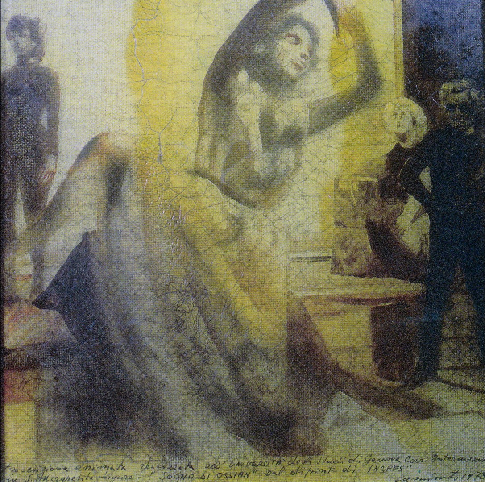
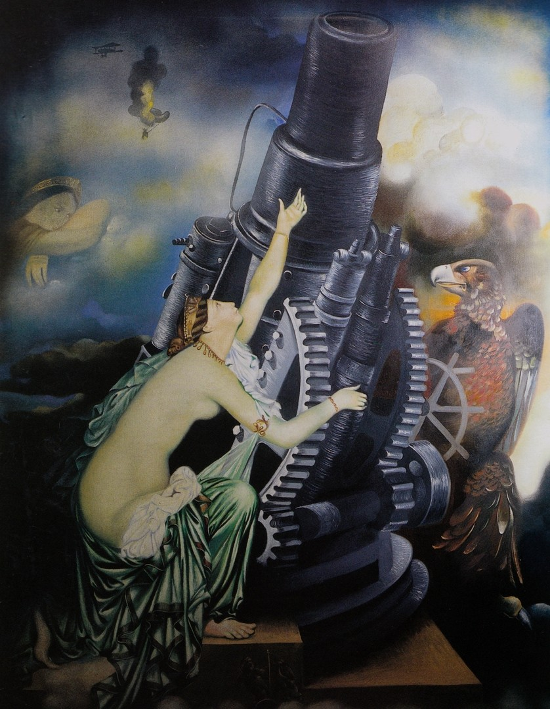
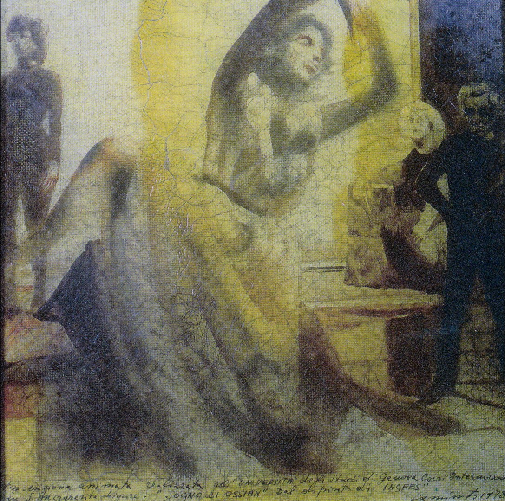
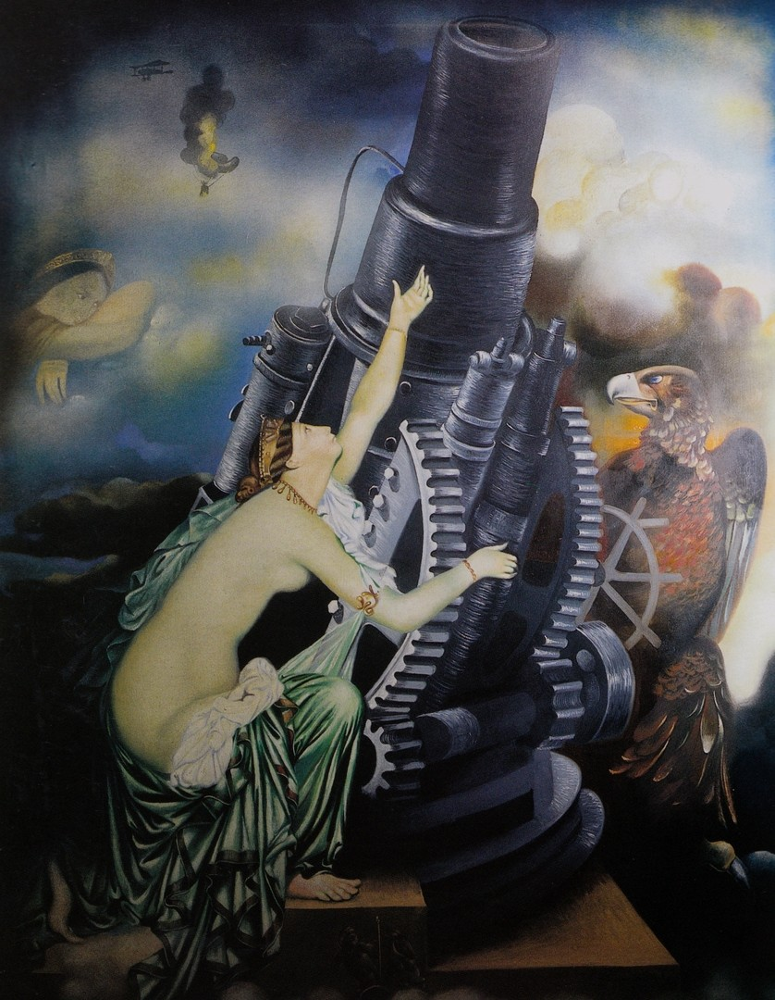
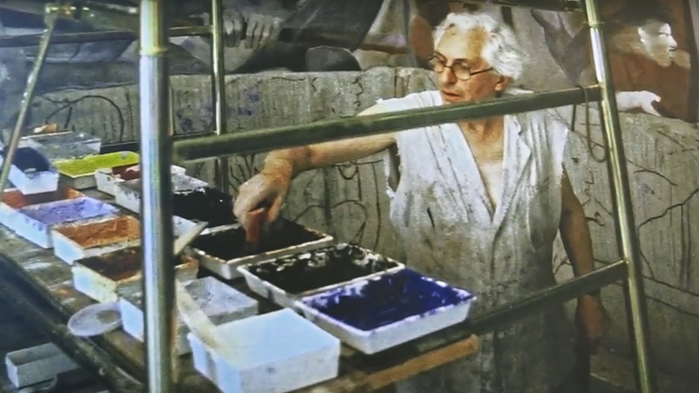
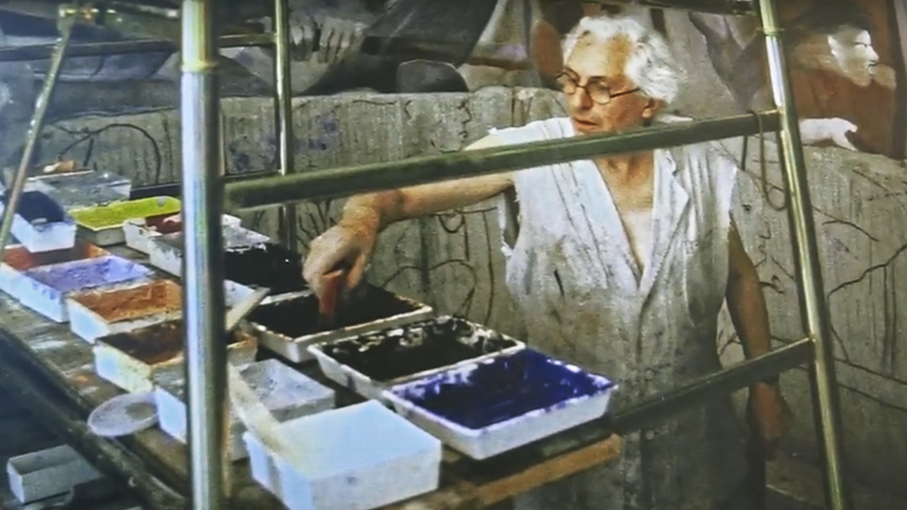

A Visual Storm
Documentary on avant-garde artist Aurelio Caminati
& Wild Atlantic inspiration

Documentary on avant-garde artist Aurelio Caminati
& Wild Atlantic inspiration
A Visual Storm explores Aurelio Caminiti’s postwar journey to Ireland, exploring the significance of his provocative avant grade work and their deep connection to Ireland’s Wild Atlantic coast.
Shot over a decade (2012- 2022) the film interweaves ocean imagery with Caminati’s artistic vision – capturing storms, solitude and creative spark that emerges from nature’s fury.
A curated selection of Caminiti’s provocative art work and performances, each piece immersed with human emotion, storms, clouds, wind & water.

 





 
